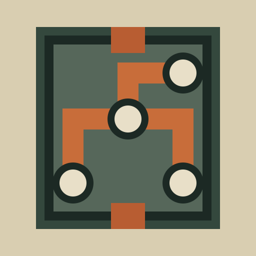

КОНТУР
КС–6 / ИСПЫТАТЕЛЬНАЯ СТАНЦИЯ
ТАПАЙ МОДУЛИ — ПОВОРАЧИВАЙ ЦЕПЬ
КС–6 / POCKET WORKS

КОНТУР
Проведи импульс через читаемую цепь, обходя блоки и учитывая ограничители.
Во время предстартового отсчёта плату уже можно собирать.
ТАП вращает доступный модуль
Ⅱ замедляет импульс в критический момент
ЛУЧШИЙ КАСКАД01
ВЫЙТИ В POCKET WORKS